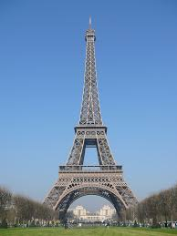
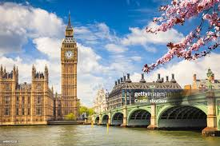
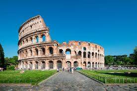
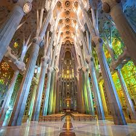
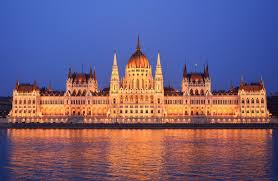

| Párizs (Franciaország) |
Franciaország a világ első számú turisztikai célpontja.
Az eiffel torony 1889-ben épült |
Eiffel torony |
 |
| London (Egyesült Királyság) |
A Big Ben elnevezést nem is az eész torony kapta hanem csak maga a harang.
Sokáig a 135m-es magasságával tartotta a világcsúcsot az óriás kerekek közt. |
Big Ben, London Eye |
 |
| Róma (OLaszország) |
A Colosseum az ókor legnagyobb amfiteátruma volt, 50.000 néző befogadására volt képes. |
Colosseum |
 |
| Barcelona (Spanyolország) |
A Sagrada Família templomja 1882-ben kezdett épülni és a mai napig sem lett kész, a tervek szerint 2030-ra fejezik be az építkezéseket. Ennek ellenére a hét minden napján fogad látogatókat. |
Sagrada Família |
 |
| Budapest (Magyarország) |
Az országház a világ harmadik legnagyobb parlamentje, több mint 90m magas és 250m hosszú és több, mint 690 teremmel rendelkezik. |
Országház, Budai vár és Halászbástya |
 |